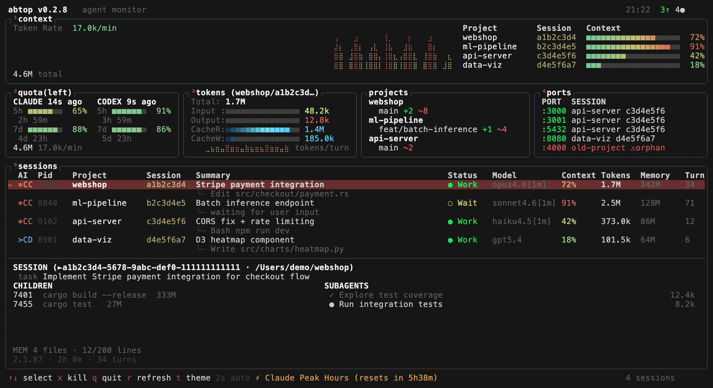
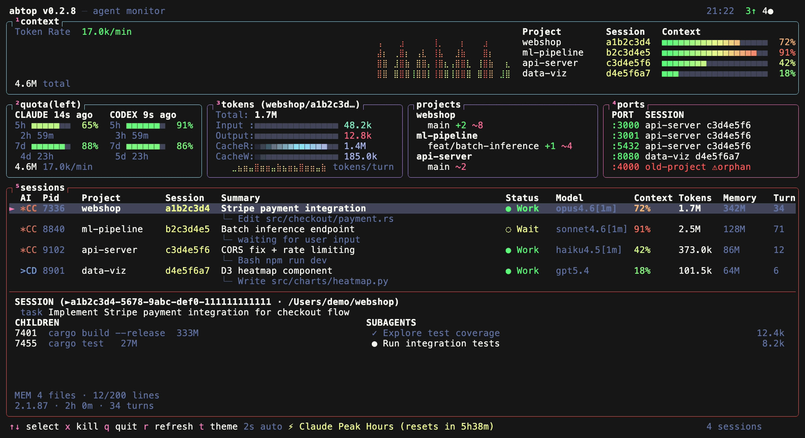
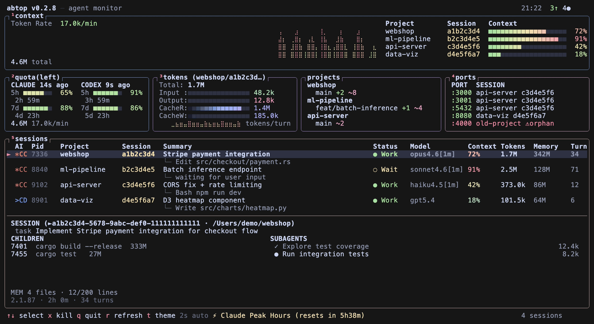
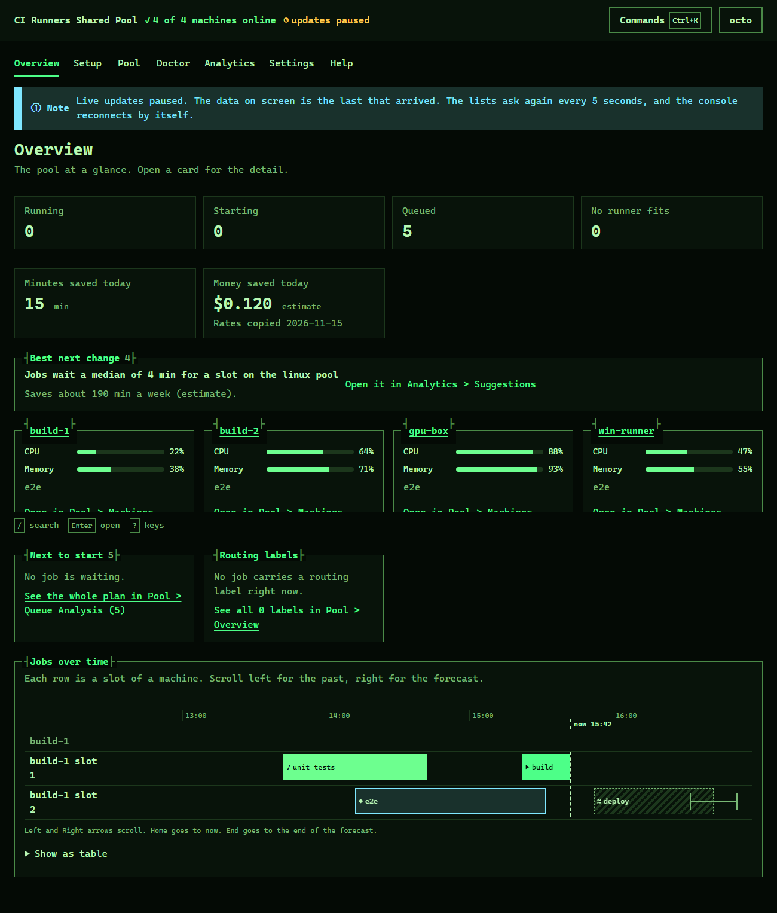
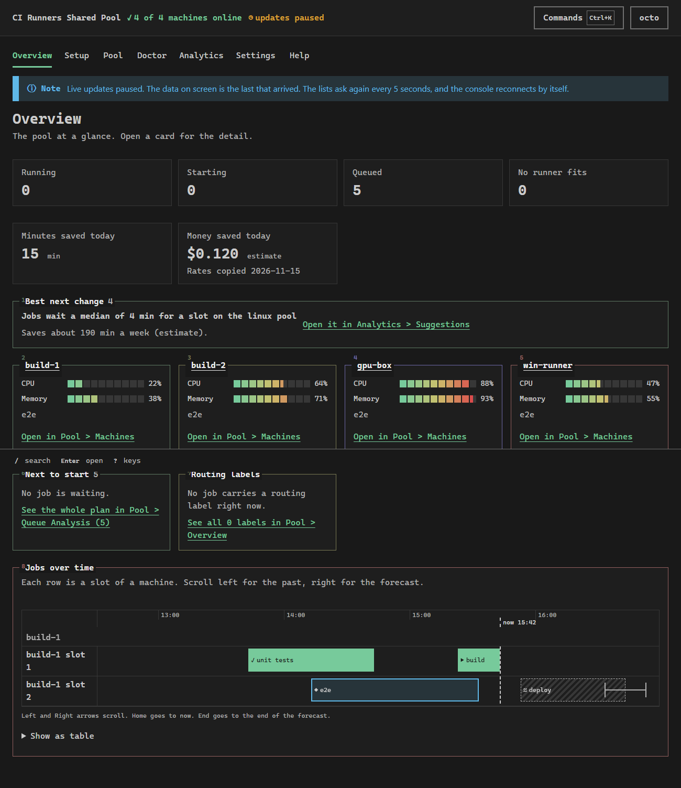
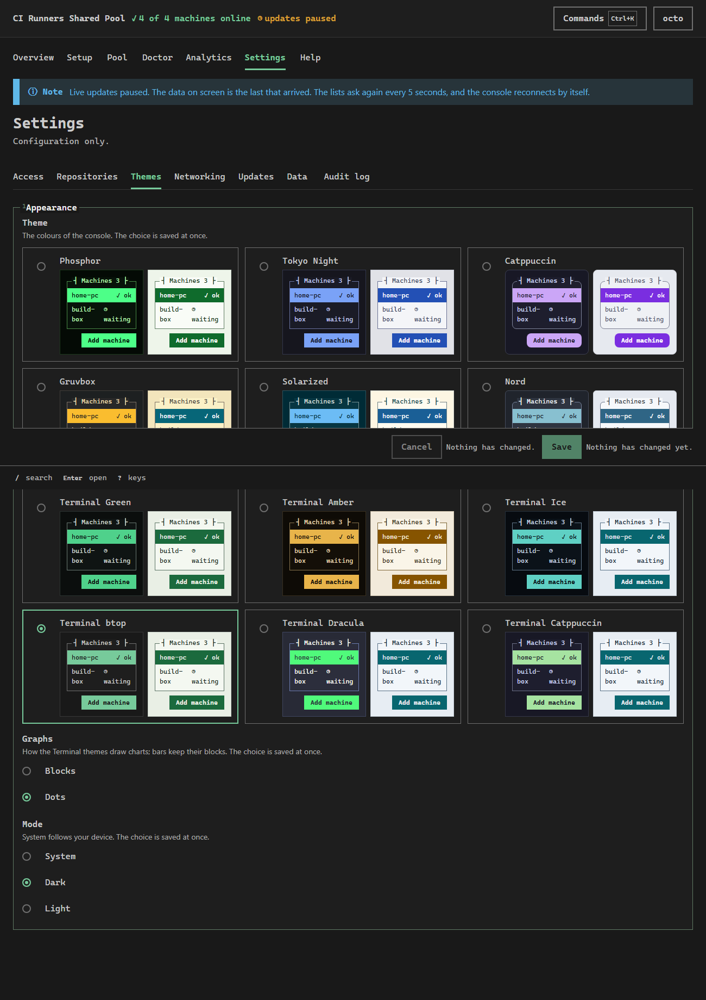
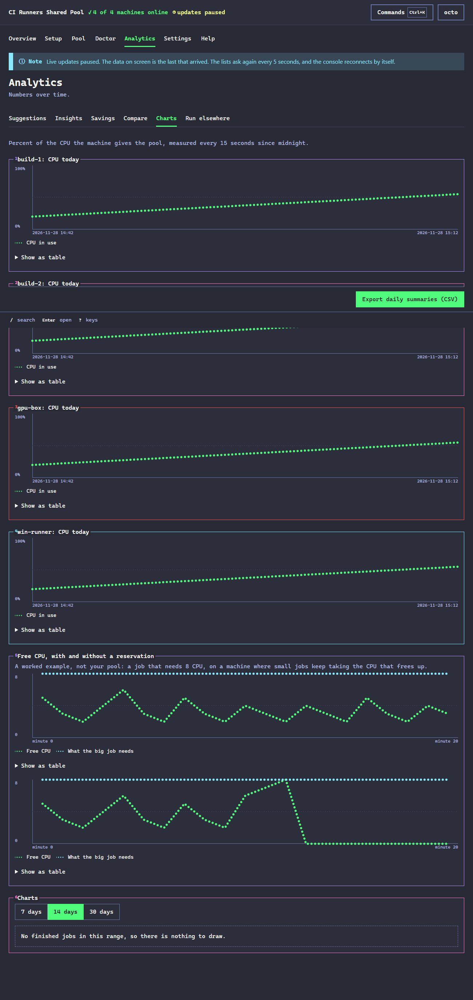
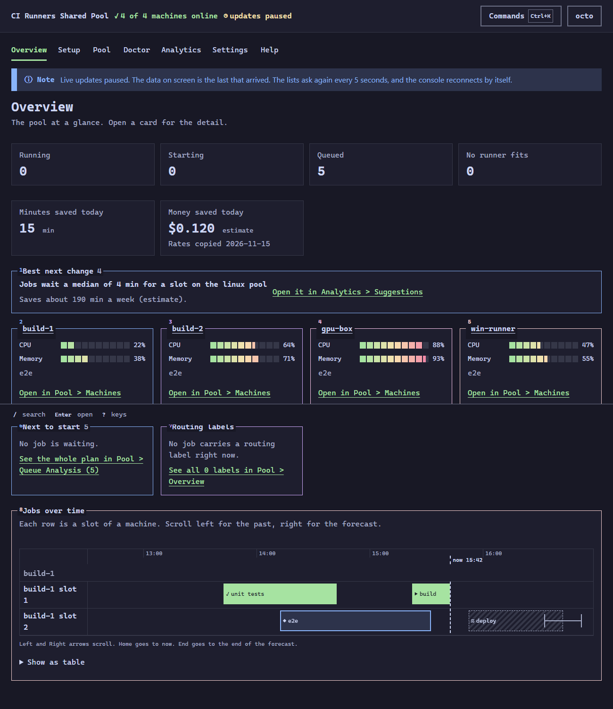
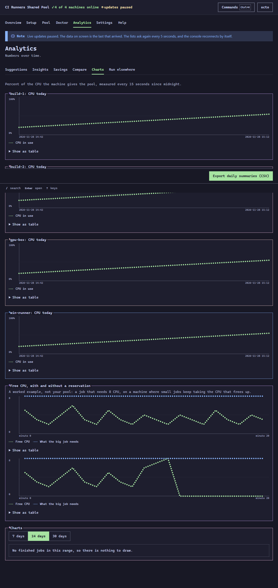
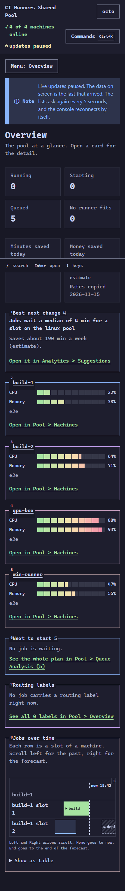

LOOK73: btop and abtop as CRSP themes
Owner review only; nothing merges. Branch LOOK73-theme-study. Every screen below is the real console, rendered by Playwright against a freshly built bin/crsp.exe with the mocked API of the e2e suite, at actual size: 1300 px desktop and 393 px phone. The three themes are real Terminal palettes (data-pal btop, dracula, catppuccin) with Graphs set to Dots. The full-page captures show the fixed key-hint footer once, mid-page: a capture artefact, not a layout.
Recommendation, short: add Terminal btop and Terminal Dracula; add Catppuccin only if renamed Terminal Mocha (a colour theme called Catppuccin already exists). Keep Graphs = Blocks as the default and offer Dots, because the dotted charts here are one colour, not btop's gradient. Details at the end.
1. What btop and abtop look like
The shared language: boxes whose title sits in the top border with a small number, a different outline colour per pane, braille-dot graphs, block meters that run green to yellow to red, coloured status words, and the selected row as a dark red band.
btop, default theme

abtop with the btop theme

abtop, Dracula

abtop, Catppuccin

2. What each theme changes
Shared by all three (CSS at the end of packages/ui/src/components.css, scoped to the Terminal theme and the three palettes): each pane or panel outline takes the next of four accent colours; each pane title gets a small superscript number in its outline colour; meter and progress segments run along a three-stop gradient left to right (the value is the length; the percent is still written, CORE-5); the selected row keeps the selection band and gets a 3 px edge in the highlight colour. Palette values are tokens generated from scripts/design/themes.data.ts.
- btop (abtop palette): Page #191919, text #cccccc, green #77ca9b, amber #dca032, red #e0605a, selection band #5a2828 with a #dc4c4c edge. Pane outlines cycle green-grey, olive, violet, rose (btop cpu, mem, net, proc box colours, lifted to 3:1). Meters run #77ca9b to #cbc06c to #dc4c4c.
- Dracula: Page #282a36, text #f8f8f2, green #50fa7b, yellow #f1fa8c, red #ff5555, selection #44475a with a pink edge. Outlines cycle cyan, purple, pink, red (abtop cpu, mem, net, proc). Meters #50fa7b to #f1fa8c to #ff5555.
- Catppuccin (Mocha): Page #181825, panel #1e1e2e, text #cdd6f4, green #a6e3a1, yellow #f9e2af, red #f38ba8, selection #313244 with a red edge. Outlines cycle blue, mauve, pink, flamingo. Meters #a6e3a1 to #f9e2af to #f38ba8.
3. Baseline: Phosphor (current default)
Overview at 1300 px and 393 px.


4. btop (abtop palette)
Page #191919, text #cccccc, green #77ca9b, amber #dca032, red #e0605a, selection band #5a2828 with a #dc4c4c edge. Pane outlines cycle green-grey, olive, violet, rose (btop cpu, mem, net, proc box colours, lifted to 3:1). Meters run #77ca9b to #cbc06c to #dc4c4c.
Overview: pane numbers and outlines, machine meters along the gradient

Setup > Runners: one outlined pane per machine, status words green and red

Analytics > Charts: dotted charts (Graphs = Dots)

Settings > Appearance: the theme picker with the new names

Overview on a phone (393 px)

5. Dracula
Page #282a36, text #f8f8f2, green #50fa7b, yellow #f1fa8c, red #ff5555, selection #44475a with a pink edge. Outlines cycle cyan, purple, pink, red (abtop cpu, mem, net, proc). Meters #50fa7b to #f1fa8c to #ff5555.
Overview: pane numbers and outlines, machine meters along the gradient

Setup > Runners: one outlined pane per machine, status words green and red

Analytics > Charts: dotted charts (Graphs = Dots)

Settings > Appearance: the theme picker with the new names

Overview on a phone (393 px)

6. Catppuccin (Mocha)
Page #181825, panel #1e1e2e, text #cdd6f4, green #a6e3a1, yellow #f9e2af, red #f38ba8, selection #313244 with a red edge. Outlines cycle blue, mauve, pink, flamingo. Meters #a6e3a1 to #f9e2af to #f38ba8.
Overview: pane numbers and outlines, machine meters along the gradient

Setup > Runners: one outlined pane per machine, status words green and red

Analytics > Charts: dotted charts (Graphs = Dots)

Settings > Appearance: the theme picker with the new names

Overview on a phone (393 px)

7. Contrast notes (UX-17)
- The token contrast test (
scripts/design/themes.test.ts) passes for all three dark palettes. - btop originals that break the rules: net outline #5c588d is 2.71:1 and proc outline #805252 is 2.72:1 on #191919 (3:1 needed); the red highlight #b54040 is 3.16:1, too low for text (4.5:1); selection #6a2f2f leaves too little room for muted text; inactive #404040 and graph text #606060 are far below 4.5:1. I lifted outlines to #6e69a8 and #94605f, red text to #e0605a, selection to #5a2828, muted text to #b0b0b0, border to #707070. Slightly lighter than real btop.
- Dracula: comment colour #6272a4 (abtop inactive and graph text) is 3.03:1, fine as a border, not as text; muted text is #b4bce0. Red #ff5555 is 4.53:1, just inside.
- Catppuccin: overlay0 #6c7086 is 3.36:1, used only as the border.
- Meters: the yellow and red cells are decorative; the percent is always written beside them.
- Light mode: no light form is designed. The palettes borrow the Green and Ice light forms. A release needs three real light forms (Catppuccin Latte exists).
- Gap against btop: dotted charts are one colour per series, not a gradient by height. That needs a chart-part change (
dots.tsx), not CSS only.
8. Recommendation
- Add Terminal btop first. Closest to what you asked for (coloured outline per pane, red band) and reads best on the Overview.
- Add Terminal Dracula second. Strongest colour, best contrast, no value rework.
- Catppuccin: the colour theme Catppuccin already exists in the picker. Name this one Terminal Mocha, or skip it; it is the softest and adds the least.
- Graphs default: keep Blocks. In btop the braille graphs are the showpiece, but here Dots is one flat colour, so it is no clearer than blocks. Offer Dots as today; revisit after the gradient chart change.
- The outline cycle follows sibling order, so a pane's colour can shift when a pane is added above it. Decoration only (title and tone carry meaning). Key it to the page area if that bothers you.
9. What it would take to ship
- Design system
next-version/tokens.md: three rows in the Cool Terminal dark table and three designed light forms; describe the outline cycle, pane numbers, gradient meters and selected-row edge under Cool Terminal; aCHANGES.mdentry. - Move the
--look-*variables into generated tokens (here they sit before the preview rules so the no-raw-hex test in the UI package passes). contentwords: the card names Terminal btop, Terminal Dracula, Terminal Mocha (or Catppuccin).- Code, mostly done on this branch:
TERMINAL_PALETTE_CHOICES,themes.data.ts, generatedtokens.css, the preview-count test; still needed: feature spec update and adocs_foldchange note for the appearance feature, and a run of the no-app-CSS, DOM layout and contrast guards. - Optional second step: gradient by value for dotted charts and heat cells.